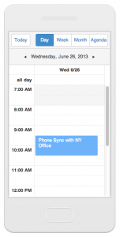
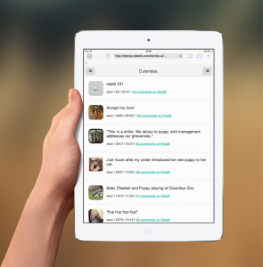

Web
5 Strategies for Building Mobile Apps with Telerik
by TJ VanToll on September 03, 2014 | Selecting a CMS That Supports Your Business
Traveling down the mobile development road can be challenging, given the diversity of mobile projects and the diversity of strategies available to build out mobile solutions. Also, understanding all of the offerings that can help a developer execute a strategy can be challenging. In this article I am going to silo Telerik’s mobile development offerings into logical and comprehensible strategies, so that a developer can easily travel Telerik’s mobile development road and stop off where a project’s requirements are met.
Disclaimer: Most of these strategies assume that you want to use web technologies to build an application UI to reach as many users as possible either using the web platform (i.e. browser) or outputting several hybrid native applications (i.e. WebView) for multiple mobile platforms from a single code base of HTML, CSS, and JavaScript.
Strategy 1: Use Kendo UI Web Widgets With Adaptive Mobile Rendering Options & Kendo UI Data Visualization Widgets
Both the Grid and the Scheduler professional widgets offer a mobile setting that when set to true will adjust the widgets’ behavior and UI to adapt to phones and tablets (aka Adaptive Rendering). In addition to these two widgets containing specific phone/tablet rendering options the Web and Data Visualization widgets are supported on touch devices. This makes it possible to build a mobile/desktop web UI with the Kendo UI Web and Data Visualization widgets without actually using a Kendo UI Mobile widget.
To get started with Kendo UI Web and Data visualization widgets, check out the demos or read the Getting Started documents.
Notes:
- TheGrid,Scheduler, and Data Visualization widgets are part of the Professional Kendo UI Widgets sold commercially. A fully functional30 day trial of Kendo UI Professional is available.
- Web and Data Visualization Widgets are supported on Firefox ESR, IE 7+, Safari 5+, Chrome Latest, Opera 15+, iOS 6.0+, Android 2.3+ (In Android 2.3 dataviz widgets support only Canvas rendering mode), BlackBerry OS 10+, Windows Phone 8+, and Chrome for Android.
- This strategy is typically used to build web applications that run in a browser on a phone, tablet, or desktop (i.e. Responsive Design/Mobile First Design).
Strategy 2: Use Kendo UI Mobile, Web and DataViz Widgets Running On Browsers
Mobile widgets are not for mobile and tablet devices alone; they can be used alongside the web and data visualization class of widgets on a handful of browsers. Given that the mobile widgets work on several desktop browsers and many of the Web and Data Visualization widgets work on common tablet and phone browsers, a developer could construct a mobile web application using web, data visualization, and mobile widgets together, intending them to run on a web browser on mobile devices first and secondarily on desktop browsers.
To get started with Kendo UI Mobile Widgets check out the demos or read the Getting Started guides.
Strategy 3: Use Kendo UI Mobile Application Toolkit And Mobile Widgets Running on Mobile Browsers or in WebViews
Kendo UI offers a toolkit for building web-based mobile applications which make use of mobile widgets inside of a framework designed to run on mobile browsers. Think of the Kendo UI Mobile Application Toolkit as a mini-SPA (single page application) framework for mobile browsers. It’s similar in design to something like jQuery Mobile but much more sophisticated when it comes to building applications instead of websites.
When the Mobile widgets are used in conjunction with the Mobile Application toolkit, it’s assumed that the application is running on a phone or tablet device within a browser or a WebView.
To get started with the Kendo UI Mobile Application Toolkit read the, “Intro to Building Apps With Kendo UI Mobile” tutorial and review the API documents for
kendo.mobile.Application.
Strategy 4: Use AppBuilder (Mobile Build/Development Tool) To Aid In Hybrid Native Development, Bridging Native API’s, and Output Cross-Platform Apps
Using Kendo UI Mobile widgets and the Mobile Application Toolkit, a developer can build a native hybrid application that is intended to simply run in a WebView. However, the developer is burdened with taking the Kendo UI mobile application and creating a native application with a WebView for each platform they would like the application to run on. Additionally, what if the application required access to a native API, like the camera? How will the developer bridge the gap between the web application in the WebView and the native environment? What’s needed is a tool that will take in HTML, CSS, and JavaScript and output the desired (i.e. iOS, Android, Windows Phone 8) native applications and also provide access to a devices native API’s (e.g. the devices camera).
This is exactly where AppBuilder steps in solves a number of complexities associated with hybrid development. In fact, solving the distribution and native API jungle is just the tip of the iceberg for AppBuilder. Appbuilder reduces the complexities associated with hybrid development and deployment.
{kind=link}
The best place to get started with AppBuilder is to sign up for a free trial and play around with the “Friends App” example application already set up and ready to roll. Of course, reading the docs is a great place to start too.
Strategy 5: Use Native Widgets to Augment Native Mobile Development done in Objective-C, Java, or C# with Native Android, iOS, Windows Widgets
A hybrid native mobile application is not always the ideal solution for a project. In those situations Telerik offers Native Android, iOS, Windows Widgets to be used by Objective-C, Java, or C# developers when doing native application development.
To get started with any of the native mobile widgets checkout one of their product pages:
Future Strategy: Use JavaScript via NativeScript To Build Truly Native iOS and Android applications
In the future, Telerik will be offering NativeScript which intends to move closer to the ideal of building mobile applications in one language (i.e. JavaScript) that can directly use the native APIs on multiple platforms without relying on Cordova.
NativeScript is currently available as a private preview. You can sign up for the NativeScript Insiders program here.
Conclusion
This article was not intended to give you in-depth working knowledge of each strategy, but more of a high level overview of Telerik solutions to help you formulate the best solution for your mobile project. It’s my hope, minimally, that I’ve set up a mental context for logically understanding the stops along Telerik’s mobile development road.

Rey Bango
Front-end developer
Rey is a front-end developer working as a developer advocate for Telerik focused on the Kendo UI tools. He lives in Boise, ID with his wife and three children. You can read more about Cody on his site or follow him on Twitter at @reyrango
More from Rey
- The Very Public Cost Of Website Failures
- Look At The Numbers
- Test Individual Performance
- Test Load Performance
- Make Optimal Use Of Your Content